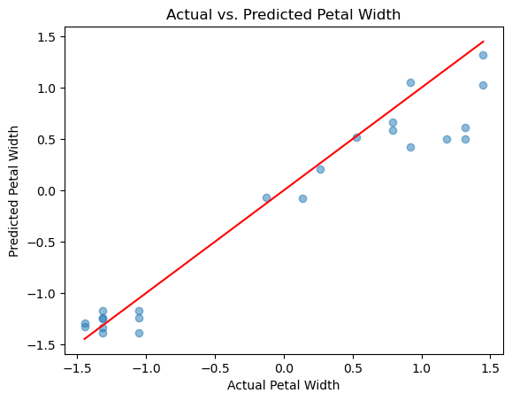

Contents
class NeuralNetwork(nn.Module)を以下のように改装して、改めて学習を行なってください。
一つ隠れ層を追加し、
n_units_2という引数でユニットの数を指定できるように設定しなさい。すべての隠れ層に
F.reluで活性化関数を追加しなさい。出力層に
F.log_softmaxで出力の正規化を行きなさい。
from sklearn import datasets
from sklearn.model_selection import train_test_split
import seaborn as sns
import matplotlib.pyplot as plt
import torch
# Load dataset and create splits
iris_dataset = datasets.load_iris()
data = iris_dataset.data
X = data[:, :-1] # sepal length, sepal width, petal length
y = data[:, -1] # petal width
import pandas as pd
df=pd.DataFrame(data, columns=iris_dataset.feature_names)
df.describe()
| sepal length (cm) | sepal width (cm) | petal length (cm) | petal width (cm) | |
|---|---|---|---|---|
| count | 150.000000 | 150.000000 | 150.000000 | 150.000000 |
| mean | 5.843333 | 3.057333 | 3.758000 | 1.199333 |
| std | 0.828066 | 0.435866 | 1.765298 | 0.762238 |
| min | 4.300000 | 2.000000 | 1.000000 | 0.100000 |
| 25% | 5.100000 | 2.800000 | 1.600000 | 0.300000 |
| 50% | 5.800000 | 3.000000 | 4.350000 | 1.300000 |
| 75% | 6.400000 | 3.300000 | 5.100000 | 1.800000 |
| max | 7.900000 | 4.400000 | 6.900000 | 2.500000 |
特徴量のスケールが異なるため、損失関数の勾配のスケールも異なり、最適化プロセスが不安定になる原因になります。
ここで、特徴量（X）とターゲット変数（y）の標準化を行います。これにより、異なるスケールを持つ特徴量を同じスケールに揃えます。
from sklearn.preprocessing import StandardScaler
# データの標準化
scaler_X = StandardScaler()
X = scaler_X.fit_transform(X)
scaler_y = StandardScaler()
y = scaler_y.fit_transform(y.reshape(-1, 1))
データ作成
学習データ：検証データ：テストデータ＝ \(0.7:0.15:0.15\)
X_train, X_temp, y_train, y_temp = train_test_split(X, y, test_size=0.3, random_state=42)
X_val, X_test, y_val, y_test = train_test_split(X_temp, y_temp, test_size=0.5) # 0.25 x 0.8 = 0.2 -> 20% validation
X_train = torch.tensor(X_train, dtype=torch.float32)
y_train = torch.tensor(y_train, dtype=torch.float32)
X_val = torch.tensor(X_val, dtype=torch.float32)
y_val = torch.tensor(y_val, dtype=torch.float32)
X_test = torch.tensor(X_test, dtype=torch.float32)
y_test = torch.tensor(y_test, dtype=torch.float32)
len(X_train), len(X_val), len(X_test)
(105, 22, 23)
len(y_train), len(y_val), len(y_test)
(105, 22, 23)
import torch.nn as nn
import torch.nn.functional as F
class RegressionNN(nn.Module):
def __init__(self, input_dim, hidden_dim1, hidden_dim2):
super(RegressionNN, self).__init__()
self.fc1 = nn.Linear(input_dim, hidden_dim1)
self.fc2 = nn.Linear(hidden_dim1, hidden_dim2)#ポイント：中間層を追加します。前の層と後の層のユニット数と合わせる必要があります。
self.fc3 = nn.Linear(hidden_dim2, 1) # ポイント：回帰のため出力は1つ
def forward(self, x):
x = F.relu(self.fc1(x))
x = F.relu(self.fc2(x))
return self.fc3(x)
# ハイパーパラメータ
learning_rate = 0.01
epochs = 2000
hidden_dim1 = 10
hidden_dim2 = 5
# モデルと最適化のインスタンス化
model = RegressionNN(input_dim=3, hidden_dim1=hidden_dim1, hidden_dim2=hidden_dim2)
criterion = nn.MSELoss()#ポイント：損失関数はMSEのような回帰用のものを使います。
optimizer = torch.optim.Adam(model.parameters(), lr=learning_rate)
# 学習ループ
for epoch in range(epochs):
# フォワードパス
outputs = model(X_train)
loss = criterion(outputs, y_train)
# バックワードパス
optimizer.zero_grad()
loss.backward()
optimizer.step()
# 検証
model.eval()
with torch.no_grad():
val_outputs = model(X_val)
val_loss = criterion(val_outputs, y_val) # ポイント：検証データでの損失も計算します。
model.train()# ポイント：モデルを訓練モードに戻します。
# 50エポックごとに損失を表示
if (epoch+1) % 50 == 0:
print(f"Epoch [{epoch+1}/{epochs}], Train Loss: {loss.item():.4f}, Val Loss: {val_loss.item():.4f}")
Epoch [50/2000], Train Loss: 0.1058, Val Loss: 0.0901
Epoch [100/2000], Train Loss: 0.0586, Val Loss: 0.0793
Epoch [150/2000], Train Loss: 0.0516, Val Loss: 0.0517
Epoch [200/2000], Train Loss: 0.0491, Val Loss: 0.0502
Epoch [250/2000], Train Loss: 0.0474, Val Loss: 0.0469
Epoch [300/2000], Train Loss: 0.0457, Val Loss: 0.0441
Epoch [350/2000], Train Loss: 0.0442, Val Loss: 0.0412
Epoch [400/2000], Train Loss: 0.0429, Val Loss: 0.0397
Epoch [450/2000], Train Loss: 0.0413, Val Loss: 0.0368
Epoch [500/2000], Train Loss: 0.0398, Val Loss: 0.0355
Epoch [550/2000], Train Loss: 0.0379, Val Loss: 0.0334
Epoch [600/2000], Train Loss: 0.0359, Val Loss: 0.0307
Epoch [650/2000], Train Loss: 0.0340, Val Loss: 0.0294
Epoch [700/2000], Train Loss: 0.0324, Val Loss: 0.0337
Epoch [750/2000], Train Loss: 0.0310, Val Loss: 0.0382
Epoch [800/2000], Train Loss: 0.0295, Val Loss: 0.0426
Epoch [850/2000], Train Loss: 0.0279, Val Loss: 0.0440
Epoch [900/2000], Train Loss: 0.0269, Val Loss: 0.0489
Epoch [950/2000], Train Loss: 0.0263, Val Loss: 0.0550
Epoch [1000/2000], Train Loss: 0.0258, Val Loss: 0.0591
Epoch [1050/2000], Train Loss: 0.0254, Val Loss: 0.0631
Epoch [1100/2000], Train Loss: 0.0251, Val Loss: 0.0626
Epoch [1150/2000], Train Loss: 0.0250, Val Loss: 0.0637
Epoch [1200/2000], Train Loss: 0.0246, Val Loss: 0.0683
Epoch [1250/2000], Train Loss: 0.0244, Val Loss: 0.0713
Epoch [1300/2000], Train Loss: 0.0242, Val Loss: 0.0696
Epoch [1350/2000], Train Loss: 0.0242, Val Loss: 0.0701
Epoch [1400/2000], Train Loss: 0.0242, Val Loss: 0.0735
Epoch [1450/2000], Train Loss: 0.0240, Val Loss: 0.0720
Epoch [1500/2000], Train Loss: 0.0235, Val Loss: 0.0723
Epoch [1550/2000], Train Loss: 0.0232, Val Loss: 0.0710
Epoch [1600/2000], Train Loss: 0.0229, Val Loss: 0.0723
Epoch [1650/2000], Train Loss: 0.0227, Val Loss: 0.0702
Epoch [1700/2000], Train Loss: 0.0223, Val Loss: 0.0770
Epoch [1750/2000], Train Loss: 0.0220, Val Loss: 0.0801
Epoch [1800/2000], Train Loss: 0.0219, Val Loss: 0.0833
Epoch [1850/2000], Train Loss: 0.0223, Val Loss: 0.0871
Epoch [1900/2000], Train Loss: 0.0227, Val Loss: 0.0876
Epoch [1950/2000], Train Loss: 0.0217, Val Loss: 0.0858
Epoch [2000/2000], Train Loss: 0.0219, Val Loss: 0.0855
model.eval()
with torch.no_grad():
test_predictions = model(X_test)
# データをnumpy形式に変換
y_test_np = y_test.numpy()
test_predictions_np = test_predictions.numpy()
plt.scatter(y_test_np, test_predictions_np,alpha=0.5)
plt.xlabel("Actual Petal Width")
plt.ylabel("Predicted Petal Width")
plt.title("Actual vs. Predicted Petal Width")
plt.plot([min(y_test_np), max(y_test_np)], [min(y_test_np), max(y_test_np)], color='red')
plt.show()
